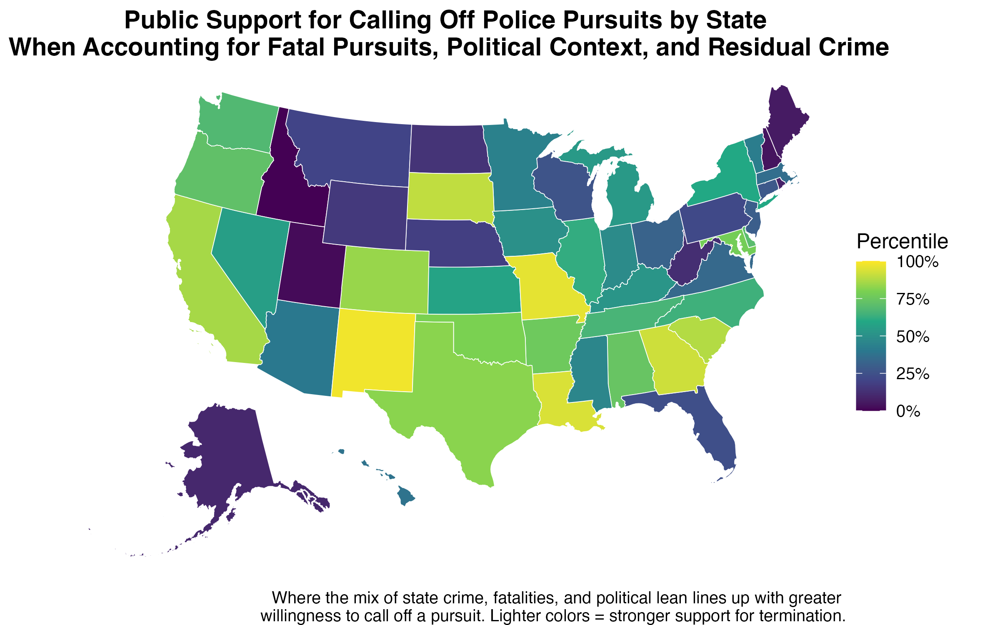
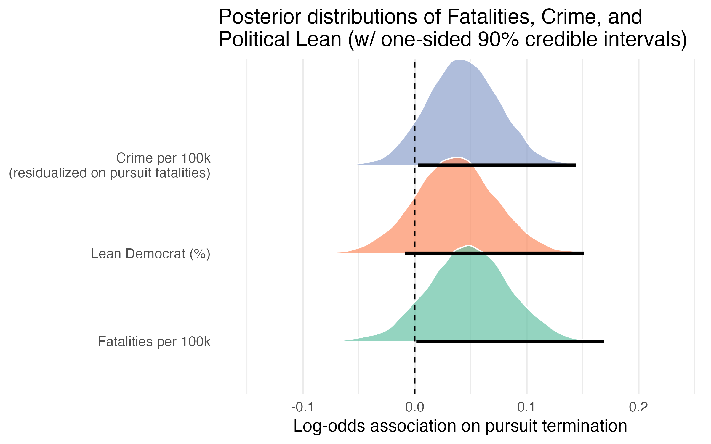

Author:
Based on data from a May 2025 nationally representative survey experiment (N ~ 3,300).
Earlier this year, my colleagues Geoff Alpert, Ian Adams, Kyle McLean, and I fielded a nationally representative conjoint survey asking Americans to evaluate police pursuit scenarios. Each scenario varied on eleven factors: offense type, speed, traffic, weather, and more. Respondents indicated both how risky they thought the pursuit was and whether they would end it.
Those results (which we’ll share in detail soon) showed that public preferences track closely with the proportional, risk–benefit reasoning embedded in modern pursuit policy. High-risk situations increased support for ending a pursuit, while more serious offenses reduced it.
I am always fascinated by geographic variation in public opinion on policing issues, so I was left with a separate question: Do these preferences vary meaningfully by state—and if so, why?
To find out, I aggregated the pursuit termination responses at the state level. The results? There is variation in how willing the public is to call off pursuits across states.
Some states show higher support for ending pursuits; others, less. The challenge is explaining why.
I tested three state-level predictors that might influence public attitudes:
Using a multilevel Bayesian model, all three predictors showed credible positive effects:
The posterior distributions for all three were shifted well into the positive range, indicating these are likely not just statistical noise.
I combined these weighted effects into a composite index to capture where state context most strongly aligns with public willingness to terminate pursuits.

It’s important to keep these results in perspective. While the state-level factors add credible explanatory power, the bulk of what drives termination judgments is still the risk evaluation inside each pursuit scenario.
The full model’s Bayesian R² is ~0.28. Most of that variance is explained by the pursuit-specific attributes (speed, traffic, weather, location, offense seriousness, etc.), not by state context. The three state-level variables move the needle, but only modestly compared to the weight respondents place on the immediate risks in front of them.

In short:
State-level variation in public preferences has practical implications:
At the same time, the results also show a unifying pattern: regardless of state, the public tends to apply the same basic risk–benefit logic embedded in modern pursuit policy. High-risk situations increase support for ending a pursuit, while more serious offenses reduce it. The state-level context may shift the baseline up or down, but the underlying decision process looks remarkably consistent nationwide.
Citation: Mourtgos, S. M. (2025). State-Level Patterns in Support for Calling Off Police Pursuits. Link
Fatality data from the San Francisco Chronicle pursuit database. State populations from US Census 2024 estimates.↩︎
Party lean data from World Population Review↩︎
Crime rates from World Population Review. Because states with higher crime rates are more likely to have more police pursuits, and therefore more pursuit-related fatalities, I residualized crime on fatalities. This approach removes the portion of crime rates that simply reflects their correlation with fatalities, allowing the isolation of the independent association between crime context and pursuit termination support.↩︎